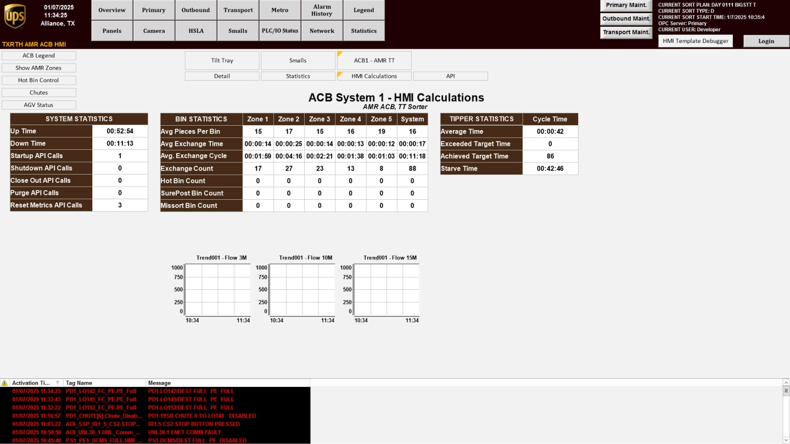

| Procedure ID | proc_open_hmi_calculations_tilt_tray_overview_check_v1 |
|---|---|
| Title | Open HMI Calculations (Tilt Tray overview) and verify system/bin/tipper statistics |
| Procedure Type | diagnostic |
| Primary Role | operator |
| Support Safe | Yes |
| Capability Tags | fleet_system_status |
| Access Surface | tipper_hmi |
| Audience Roles | operator |
| Failure Pattern Tags | None |
| Validation Status | needs_sme_review |
| Merge Status | source_finalized |
Use the Tipper HMI / WebVisu / VISU to open the HMI Calculations screen (Tilt Tray overview) from the ACB System screen, then confirm the screen shows populated information for system operations, bin statistics, and tipper statistics for live operation.
When you need to verify that the Tilt Tray overview (HMI Calculations) is displaying live system operations, bin statistics, and tipper statistics on the HMI.

Responsible role: operator
Instruction:
On the ACB System screen, press the "HMI CALCULATIONS" button.
Expected result:
The HMI Calculations (Tilt Tray overview) screen begins to load after pressing "HMI CALCULATIONS" from the ACB System screen.
Stop or Escalate If:
Responsible role: operator
Instruction:
Verify the screen you opened is the "HMI Calculations" screen and is the "Tilt Tray" overview.
Expected result:
The displayed screen is identified as the HMI Calculations screen and is the Tilt Tray overview.
Stop or Escalate If:
Responsible role: operator
Instruction:
On the HMI Calculations screen, locate the displayed information categories for: (1) system operations data fields, (2) bin statistics values, and (3) tipper statistics values.
Expected result:
All three categories (system operations, bin statistics, tipper statistics) are visible on the HMI Calculations screen.
Stop or Escalate If:
Responsible role: operator
Instruction:
Confirm the screen is populated with values (not blank/missing) for system operations, bin statistics, and tipper statistics.
Expected result:
System operations, bin statistics, and tipper statistics fields show populated values rather than blank/missing entries.
Stop or Escalate If: